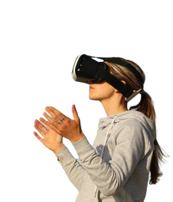

Alticoins
NFTs
NFT é uma sigla para "Non-fungible Token" que, em tradução livre, seria algo como "Token não-fungível". Um ativo criado a partir da tecnologia blockchain que serve como identidade digital de um item. O NFT assegura a autenticidade daquele item, que é único. Ou seja, o ativo garante a posse de um bem exclusivo, que nenhuma outra pessoa tem. Gostou dessa?
Metaverso
O metaverso é uma nova realidade baseada na integração entre mundo real e mundo virtual. Trata-se de um universo onde diversas tecnologias e inovações, como a 3D e a Inteligência Artificial, seriam a nova “extensão” da internet. É como se você pudesse montar outra vida na realidade virtual. Sabe o filme Matrix e Avatar? É bem por aí! Vai encarar?
Web 3.0
A Web3, ou Web 3.0, é a terceira fase da internet. O objetivo da Web3 é interconectar os dados de maneira descentralizada para oferecer uma melhor experiência, mais rápida e personalizada, para o usuário. Além disso, a internet será construída usando inteligência artificial, aprendizado de máquina e web semântica (uma extensão da World Wide Web que permite a cooperação entre humanos e computadores). Além de utilizar da segurança da blockchain para manter as informações protegidas e seguras. Quer conhecer mais como vai funcionar?